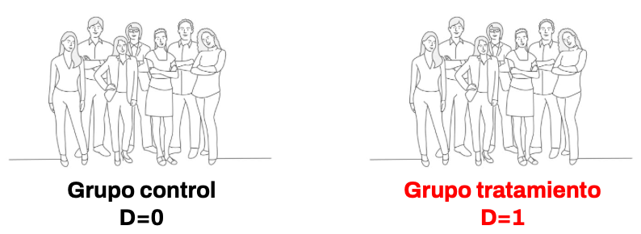
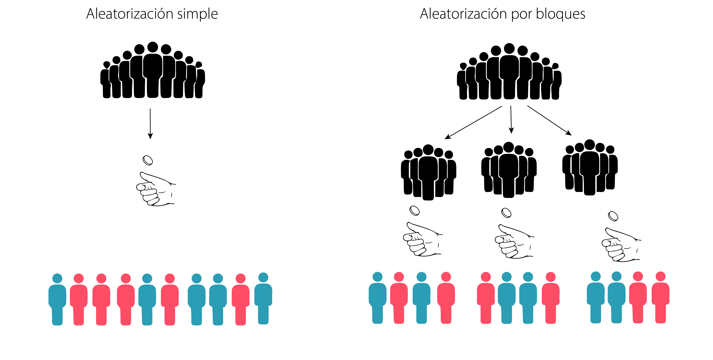
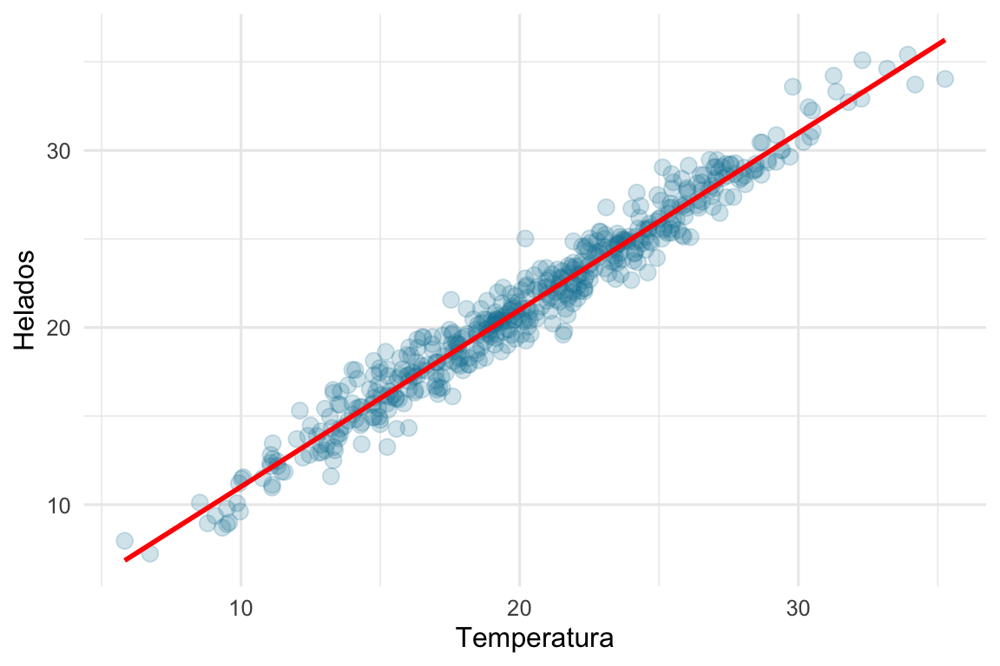
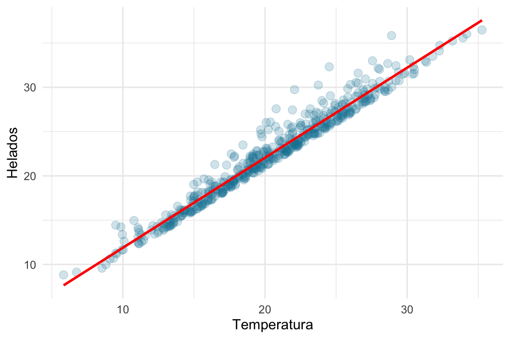
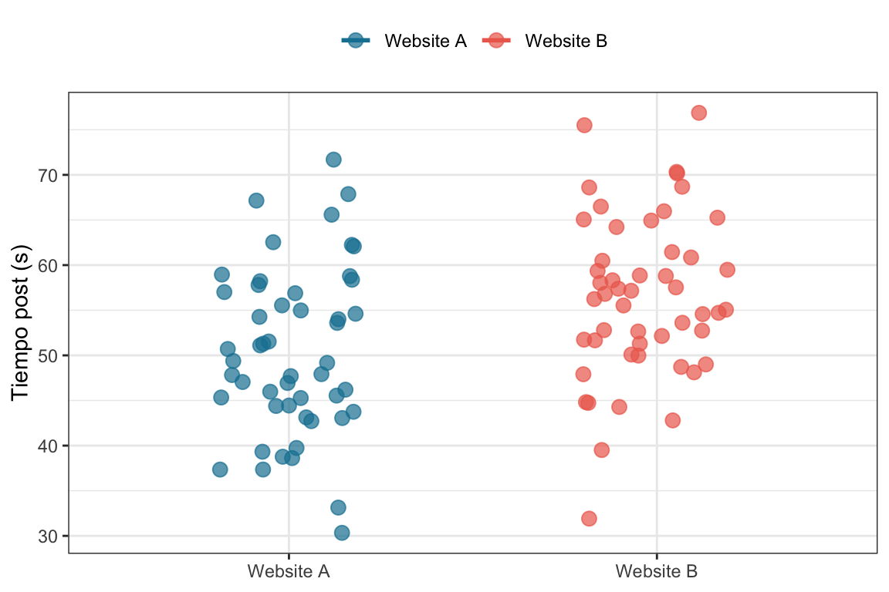
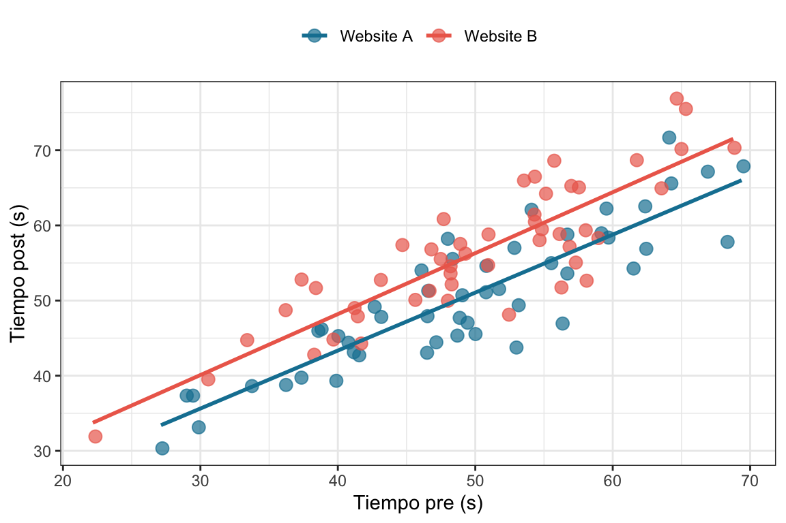
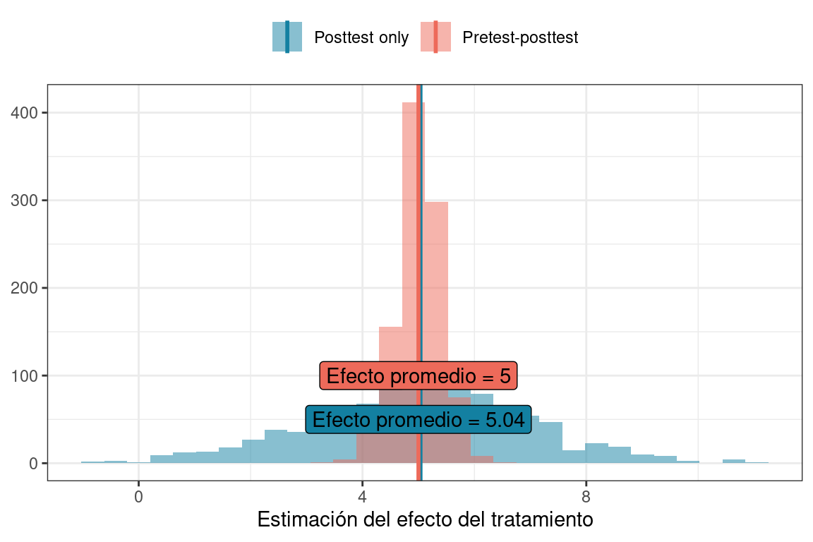
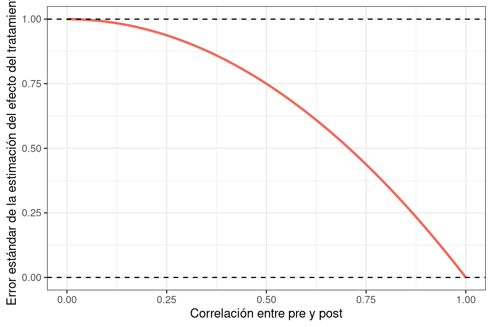
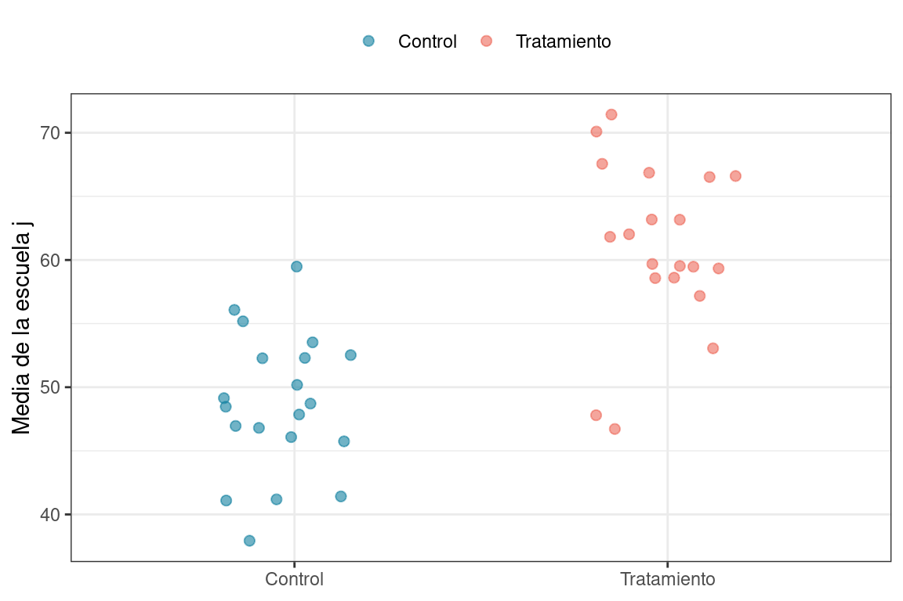
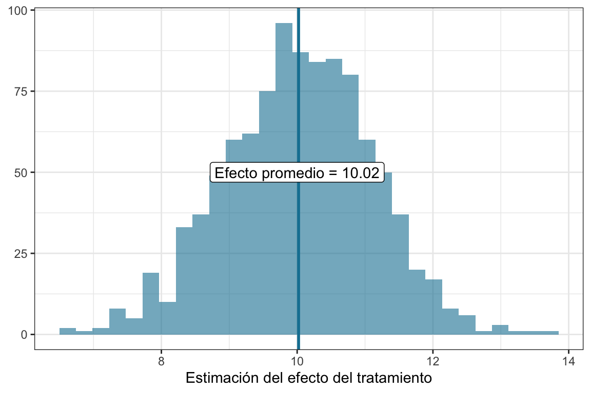

5 Experimentos aleatorios
El capítulo que sigue está en construcción 🚧. Por favor tengan paciencia.
5.1 ¿Por qué son importantes los experimentos aleatorios?
En los experimentos aleatorios1 los sujetos son asignados a los grupos (por ejemplo, tratamiento y control) aleatoriamente. Esto significa que en la asignación de los grupos aleatorios hay involucrado un proceso realmente aleatorio, como arrojar un moneda. Ojo con confundir el concepto de asignación aleatoria con el de muestra aleatoria: Que el muestreo sea aleatorio significa que los participantes son una muestra seleccionada al azar de una población más amplia, mientras que la asignación aleatoria significa que los participantes, independientemente de si fueron seleccionados de una población más amplia o no, son asignados al azar a diferentes condiciones experimentales.
1 A lo largo del capítulo vamos a usar de forma intercambiable las expresiones experimentos aleatorios y experimentos aleatorizados. También vamos a usar la sigla RCT del inglés randomized controlled trials.
Por ejemplo, en el caso más simple, esto significa que dada una muestra de personas, vamos a asignar a cada de una de ellas “tirando una moneda” al grupo control (\(D=0\)) o tratamiento (\(D=1\)) como se ve en la siguiente figura.

Los experimentos aleatorios son el gold-standard para estimar el efecto de un tratamiento. De hecho, al ser la asignación aleatoria, podemos asegurar que, como mencionamos en el capítulo Capítulo 3, existe independencia (\((Y^0, Y^1) \perp D\)). Esto nos asegura que la diferencia de medias de los grupos tratamiento y control son un estimador consistente del ATE. Dicho esto, veremos que hay formas más “eficientes” de estimar el ATE, es decir, con mayo potencia estadística.
Hay una razón extra para que en este libro empecemos hablando en detalle de los experimentos aleatorizados, y es que cuando entremos de lleno en el mundo de los cuasiexperimentos nos será de gran ayuda entender cuál es el problema y cuál es la solución que se propone. Esto nos va a permitir tener una idea más concreta de las ventajas y limitaciones de cada uno de los diseños cuasiexperimentales que vamos a estudiar más adelante.
En muchas ocasiones los experimentos aleatorios terminan siendo degradados a la categoría de cuasiexperimento. Por ejemplo: Supongamos que hay un estudio que quiere evaluar el efecto de un programa de mindfulness en la cantidad de hechos de violencia en un establecimiento educativo. Para esto se asigno aleatoriamente a diez escuelas al grupo mindfulness y diez escuelas al grupo control. Hasta acá todo muy lindo, deberíamos llevar adelante el programa, medir la cantidad de hechos de violencia en cada escuela, hacer la diferencia de medias y voilá, ya tenemos un estimador del ATE. Pero a veces las cosas no son tan sencillas y en el medio de este experimento van a pasar cosas. Por ejemplo, hay un grupo de colegios del grupo control que, por presión de los padres, incorporan un programa de mindfulness propio, mientras que otro grupo del colegios, esta vez del grupo tratamiento, deciden no implementar el programa de mindfulness propuesto por nosotros porque les interfiere con la curricula. Para colmo, varios colegios de ambos grupos deciden que la participación sea voluntaria. En fin, el horror. Lo que nos termina pasando es que, aunque el diseño sea un experimento aleatorio, la pérdida de control sobre la implementación y la participación voluntaria generan contaminación y sesgo de selección, degradando el estudio a un cuasiexperimento. Es decir, la comparación entre grupos ya no se basa en la aleatorización y vamos a requerir de otros controles estadísticos para corregir posibles sesgos. Más adelante vamos a charlar un poquito más de esto.
Dicho esto volvamos al maravilloso mundo de los 🌈experimentos aleatorizados ideales🌈.
5.2 El experimento ideal
El experimento ideal es ese experimento tan bien planificado, tan bien implementado y tan bien acatado por sus participantes que en la realidad nunca ocurre. Sin embargo, hay una excepción y son, en general, los medical trials. De hecho hay algunas características que esperaríamos ver en un RCT3 y son las siguientes.
3 Randomized clinical trials, o ensayos clínicos aleatorizados. Son estudios experimentales que se utilizan para testear la eficacia o la seguridad de procedimientos médicos o tratamientos.
- Controles adecuados: Si diseñamos un experimento para estimar el efecto de un tratamiento, debemos tener un grupo control adecuado con el que comparar. Sin embargo, esto no significa que el grupo control sea siempre un grupo simplemente no expuesto al tratamiento. Por ejemplo, es muy conocido el ejemplo de la determinación de la efectividad de un fármaco, en los que al grupo control se le ofrece una pastilla que no contiene a la droga siendo estudiada sino unas pastilla de igual forma, tamaño y prescripción de consumo pero, típicamente, de azucar. Esto lo que nos permite es poder descontar el efecto de consumir un placebo en la estimación final de la efectividad del fármaco4.También es posible que por consideraciones éticas no podamos dejar al grupo control con un tratamiento placebo (por ejemplo cuando ya existe un tratamiento efectivo para la enfermedad que estamos estudiando, si lo hicieramos privaríamos a los sujetos del grupo control de su derecho a la salud), en estos casos el grupo control recibe el tratamiento típico y el grupo intervención el del estudio, en estos casos descontaremos el efecto del tratamiento común y nuestro ATE es el efecto de la intervencion por encima del tratamiento usual
Asignación aleatoria a los grupos experimentles: Como vimos en el capítulo Capítulo 3, la mejor forma de asegurar que los grupos control y tratamiento son lo más iguales posibles es asignando aleatoriamente a los participantes. Esto, junto con una cantidad de participantes suficiente nos asegura que ambos grupos son iguales en todos los factores que pueden influenciar el resultado del experimento, incluyendo los factores de los que no sabemos.
Los individuos deben ser considerados en el grupo asignado: Los participantes asignados al grupo tratamiento deben ser considerados como tratamiento, independientemente de si se expusieron o no al mismo. Esto es conocido como el principio intention to treat y puede sonar un poco raro. Sin embargo, lo podemos pensar como un cambio del tratamiento que queremos evaluar. Por ejemplo, hay un experimento en el que se quiere evaluar el efecto de la estatinas en el colesterol LDL. Hay un grupo al que le dan estatinas y otro grupo al que le dan un placebo. Un $18% $ de los que fueron originalmente asignados al grupo estatinas dejó de tomarlas y un $38% $ de los que fueron asignados al grupo placebo empezó a tomar estatinas durante el trial. Esto significa que nuestro experimento no estimaría correctamente el efecto de tomar las estatinas, pero por otro lado, sí estimaría bien el efecto de ser recetado con estatinas. Y si lo pensamos un poco: ¿No es algo más razonable estimar el efecto de lo segundo?5
5 Una mejor explicación de este enfoque y su contraparte (no recomendada), el análisis por protocolo pueden visitar este paper[esto] https://onlinelibrary.wiley.com/doi/10.1111/nep.13709
Todos los grupos deben ser tratados igual: Por ejemplo, si en el ejemplo anterior invitamos a la gente del grupo de estatinas a controles médicos más seguidos, o los evaluamos con más dedicación, va a ser imposible separar los beneficios de la droga de los beneficios de las diferencias en cómo tratamos a los pacientes.
Blinded: Para que las estimaciones de un experimento no se contaminen, resulta necesario que los participantes (o unidad experimental) no conozcan a que grupo experimental pertenecen. Esto es importante porque podría haber algún tipo de contaminación del efecto como por ejemplo que los sujetos que sepan que reciben la intervención se esfuercen para rendir mejor en el outcome o lo contrario al saberse “abandonados” al grupo control tiendan a rendir peor.
Double blinded: Siguiendo con lo mencionado antes, también resulta deseable que los investigadores tampoco sepan a que grupo experimental pertenece un sujeto o unidad experimental. Esto tiene como objetivo reducir al mínimo las diferencias entre los grupos. Por ejemplo, en un experimento para estimar la efectividad de una campaña de comunicación para motivar la vacunación, los investigadores podrían espaciar menos las comunicaciones con alguno de los grupos experimentales, contaminando así el efecto de la intervención en sí misma.
Por supuesto que esto no siempre es posible. Por ejemplo, si un experimento quiere estimar la efectividad de una nueva cirujía laparoscopica versus su alternativa tradicional, resulta imposible que el cirujano que va a llevar adelante la misma no sepa a qué grupo pertenece el paciente. Sin embargo, es importante que en estos casos la asignación al grupo se retrase lo más posible disminuyendo la posible influencia de otros participantes (por ejemplo, un investigador podría estar más atento a la preparación preoperatoria de algún grupo experimental).
Medir a todos los individuos: Todos los individuos que comenzaron el experimento deben ser medidos para evaluar el efecto del tratamiento. Esto no siempre pasa y es algo de lo que vamos a hablar más adelante en este capítulo.
Que lindo es el diseño experimental. Todos somos felices, todo funciona. ¿El libro debería terminar acá?
Pues no mi ciela. Ojalá llevar adelante experimentos fuera tan fácil.
5.3 Cuando la cosa no es tan ideal
5.3.1 Aleatorización por bloques
Intuitivamente pensamos que la aleatorizacion de los sujetos a un grupo control o un grupo intervencion es tan simple como lanzar una moneda (y muchas veces lo es), este método se conoce como aletorización simple. Sin embargo puede que este método no sea siempre deseado. Por ejemplo, se quiere testear la ventaja de una intervención laparoscópica (mínimamente invasiva) sobre una cirugía tradicional (en la que se abre el abdomen). Es razonable pensar que los cirujanos se vuelven mejores con el tiempo sin importar a que tipo de cirugía, porque la práctica hace al maestro. Bueno imaginemos que aplicamos un proceso de aleatorización simple, es posible que los primeros sujetos sean asignados con más frecuencia al grupo intervencion que al grupo control y los últimos viceversa (ya que la randomizacion es un proceso independiente, la asignación del sujeto anterior no condiciona al que sigue, y esto es posible). En este escenario hipotetico pero posible, el ATE que queremos estimar se encuentra contaminado por una variable confusora (la habilidad del cirujano). ¿Cómo evitamos esto? Bueno una forma razonable es evitar que los sujetos se asignen al grupo todos juntos sino a medida que el cirujano va aprendiendo. Para hacer esto se pueden crear bloques temporales, por ejemplo, los 10 primeros voluntarios, los 10 siguientes y así sucesivamente. Dentro de cada bloque hacemos una asignación aleatoria, de esta forma nos aseguramos que haya un numero mas o menos balanceado de sujetos en el grupo control e intervencion expuestos al cirujano torpe, intermedio y master level.

5.3.2 Spillover
En un experimento ideal, los sujetos son asignados aletoriamente a los grupos experimentales y se quedan ahí. El efecto spillover o derrame sucede cuando los sujetos del grupo control reciben en forma indirecta parte o todo el tratamiento que esta diseñado para el grupo de intervención. ¿Cómo es esto posible? Es muy posible, sobre todo en intervenciones conductuales. Pongamos ejemplos para que se entienda. Supongamos que queremos ver el efecto de una intervención educativa como hábitos saludables para prevenir cierta enfermedad, algunos sujetos son asignados a la intervención y reciben una charla educativa y otros nada. Un par de amigos (i y j) han sido aleatorizados a un grupo y al otro respectivamente. Al terminar la intervención el sujeto intervenido (i) le cuenta la charla al sujeto del grupo control (j) y este “recibe el tratamiento”. En este ejemplo un sujeto asignado a un grupo control recibe el tratamiento destinado al grupo intervención. Es decir, el grupo tratamiento ha derramado hacia el grupo control.

Vale la pena preguntarse por qué el spillover es relevante en los estudios aleatorizados. Si volvemos al capítulo 3 y a repasar outcomes potenciales podemos ver que este marco requiere una asuncion a la que llamamos SUTVA6 o en otras palabras este supuesto establece que los resultados potenciales del sujeto j dependen únicamente de su propio estado de tratamiento (el que fue asignado), sin verse afectados por el tratamiento recibido por otro sujeto i. Sin embargo esto no es así, ya que i es responsable del resultado potencial de j porque “le ha aplicado” el tratamiento. Al violar esta asunción, estimar el ATE a través de una diferencia de medias puede estar francamente sesgado por este efecto. El spillover es un efecto difícil de rastrear y sobretodo difícil de corregir, es frecuente en intervenciones que tienen que ver con comunicacion o informacion, ya que la comunicación fluye despues de la intervención de forma incontrolable para los investigadores. El mejor enfoque es preveer esta posibilidad e instaurar barreras a priori para disminuir el contagio que una intervención pueda tener sobr el grupo control.
6 Del inglés stable unit treatment value assumption.
5.3.3 Reversión de la cadena causal (o reverse causation)
La reversión causal es uno de los sesgos que pueden plagar nuestra interpretación de la cadena causa-efecto, sobre todo en los estudios observacionales.
Inventemos un escenario hipotético: pensemos que un investigador quiere evaluar si la lluvia caída aumenta la frecuencia de gente con paragüas en la calle. La respuesta es obvia para nosotros que conocemos las leyes de la naturaleza y que la gente odia mojarse. Cada vez que llueve, la gente sale a la calle con paragüas. Pero que pasa si nuestro investigador fuera un ser completamente ajeno a todo esto (digamos un batiduende de la 5ta dimensión) y no tuviera conocimiento alguno previo. Este ser, podría contar la frecuencia de paraguas en la calle y si llueve o no, hacer una regresión logística (por poner un ejemplo) para predecir la lluvia en función de la cantidad de paragüas de la calle y de seguro que sería un predictor significativo Y es más, podría cerrar su estudio concluyendo que un aumento de una unidad en la frecuencia de paragüas aumenta enun cierto porcentaje las chances de que lluve, o sea que los paragüas causan la lluvia. Nuestro batiduende investigador habría incurrido en un sesgo de causalidad inversa. Podríamos pensar por lo absurdo del ejemplo que este sesgo es dificil de que afecte a nuestras investigaciones, sin embargo es muy frecuente. Ejemplos de causalidad reversa son por ejemplo: observar que los barrios con propiedades mas costosas tienen un centro comercial y suponer que colocar un centro comercial en un barrio aumenta el valor de la vivienda, cuando lo que pasa es que los centros comerciales decidan colocarse en barrios con propiedades costosas; u observar que las personas que hacen más ejercicio tienen menos síntomas depresivos, e interpretar que hacer ejercicio reduce la depresión cuando podría ser que las personas menos deprimidas tienen más energía o motivación para hacer ejercicio.
Los diseños experimentales pueden protegernos mejor que los estudios observacionales de este tipo de sesgo, por qué, fundamentalmente porque en nuestro diseño experimental vamos a aplicar la causa y esperar que la consecuencia suceda después de esto. Por regla general las causas no pueden ocurrir después que sus consecuencias y de esta manera la dirección de la causalidad es forzada hacia un solo lado. Sin embargo, el sesgo de causalidad inversa puede ocurrir aún así en un ensayo experimental bajo ciertas condiciones:
No cumplimiento del tratamiento (non-compliance) Supongamos que en el experimento se asigna aleatoriamente a algunos sujetos a recibir un tratamiento, por ejemplo una nueva terapia para la caida de cabello, pero los sujetos con mas caida de cabello en las primeras dosis del grupo tratamiento sienten que el tratamiento es inutil y dejan de tomar las pastillas . Este evento introduce un sesgo de causalidad inversa si analizamos a los sujetos por si tomaron el tratamiento o no (por protocolo en lugar de intention-to-treat) ya que el outcome (la caida del cabello) genera la exposicion (la cantidad de medicación que las personas en el grupo de tratamiento reciben.
Efectos anticipados o comportamiento reactivo A veces, los participantes modifican su comportamiento en respuesta a saber su asignación. Ejemplo: alguien asignado al grupo control empieza a buscar alternativas por su cuenta (porque no recibió tratamiento), y eso afecta su resultado. O alguien en el grupo tratado ya anticipa que tendrá mejoríay cambia su comportamiento desde antes del tratamiento real. El resultado cambia en respuesta a la expectativa del tratamiento, y no necesariamente al tratamiento en sí.
Mediciones mal temporizadas En algunos experimentos, puede que la variable de outcome sea medida antes de que el tratamiento surta efecto, o incluso antes de aplicarlo bien. Si los resultados se usan para definir o cambiar el tratamiento asignado (por error o por diseño), ya no hay garantía de temporalidad: el resultado podría estar influyendo en el tratamiento.
5.4 Experimentos between groups
En este capítulo definimos los experimentos aleatorizados como aquellos en los que se asigna al azar a los participantes a una condición de tratamiento o de control. Este enfoque corresponde, en realidad a un sólo tipo de diseño aletorizado, los diseños conocidos como between-groups.
En los experimentos between-groups, los participantes se distribuyen aleatoriamente entre diferentes condiciones de tratamiento, formando grupos que luego se comparan entre sí. Por ejemplo, se puede asignar a estudiantes a distintos métodos de enseñanza, a pacientes hipertensos a planes de dieta variados o a adultos mayores a programas de ejercicio físico.
Antes de analizar los distintos tipos de diseños dentro de esta categoría, presentaremos algunas definiciones y notaciones clave.
Cuando querramos representar esquematicamente un diseño, vamos a recurrir a la notación clásica. Según esta, se representarán gráficamente tanto los experimentos aleatorizados como los cuasi-experimentos usando las letras \(X\) y \(O\). Una \(X\) indica la administración de un tratamiento, y una \(O\) representa una observación. Una \(O\) puede referirse a una observación de una o varias variables en un momento determinado. Una observación puede ser cualquier tipo de medición, ya sea un test escrito, un registro fisiológico, un informe verbal, o cualquier otra evaluación empírica. En estos diagramas, el tiempo (como la lectura) fluye de izquierda a derecha. Cuando se realizan varias observaciones, se utilizan subíndices en las \(O\) para indicar el momento de cada medición.
Utilizando esta notación, el experimento aleatorizado entre grupos más simple se representa así:
Vamos a tratar de entender que significa esta notación, en principio hay dos líneas, esto indica que hay dos grupos, cada línea empieza con una \(R\), esto indica que los sujetos fueron asignados aleatoriamente (o random) a la participacion de ese grupo, vemos en la primera línea que ese grupo a recibido un tratamiento \(X\) y el otro no y que ambos grupos han sido evaluados posterior a ello en una instancia \(O\). Este diseño se conoce como post-test only o sólo post-test ya que como puede verse en este diseño la única medida que se toma es despues de la intervención.
Una vez que hemos entendido este diseño sencillo podemos introducir otro un poco más complejo como este
\[\begin{array}{lcl} \text{R:}& O_1 & X & O_2 \\ \text{R:}& O_1 & & O_2 \\ \end{array}\]La fila superior indica que un grupo es observado (\(O_1\)), luego recibe un tratamiento (\(X\)), y se observa nuevamente (\(O_2\)). La fila inferior muestra que un segundo grupo es observado, no recibe el tratamiento (aunque puede recibir uno alternativo), y luego es observado de nuevo. Nuevamente, la “\(R:\)” indica asignación aleatoria. (Lo ideal es realizar la asignación aleatoria después de la \(O_1\), así que la posición de “\(R:\)” no indica necesariamente el orden temporal, ya discutiremos el por qué de esto). En pocas palabras lo que diferencia este diseño del anterior es que existe una observación más, una antes de la intervención. Este tipo de diseño entonces se llama pretest-posttest Ahora que hemos introducido esquemáticamente los dos diseños fundamentales de los experimentos aletorizados entre grupos vamos a hablar de ello.
5.4.1 Sólo posttest
Recapitulemos, los diseños post-test only son la forma más simple de experimentos aletorizados entre grupos en donde un grupo es aleatoriamente asignado a una intervención, el otro a su condición de control, y posteriormente a ello se evalua el outcome. Resumiendo e la notación:
\[\begin{array}{lcl} \text{R:} & X & O \\ \text{R:} & & O \\ \end{array}\]Este diseño puede escribirse (y analizarse) utilizando un modelo lineal que tiene la siguiente forma:
\[ \begin{array} _Y_{i} &=& \beta_0 + \beta_T T_i + \epsilon_{i} \end{array} \tag{5.1}\]
Donde \(Y_i\) es el valor de que adopta \(O\) (es decir nuestro outcome post-intervención), y \(T_i\) es una variable indicadora que toma el valor \(1\) si el participante pertenece al grupo tratamiento y el valor \(0\) si no y \(\epsilon_{i}\) representa el término de error (varianza no explicada por el modelo). Para los modelos que veamos en estas secciones \(\epsilon_{i}\) tiene una distribución \(\epsilon_{i} \sim \mathcal{N}(0, \sigma_\epsilon^2)\),
Vamos a ver como podemos usar este diseño (y este modelo), para estimar el ATE.
5.4.1.1 Un A/B test
Un A/B test es un experimento aletorizado muy popular en el campo del diseño de páginas web. El mismo consiste en presentar a los usuarios con dos versiones del mismo sitio web (la versión A y la versión B) y medir su comportamiento en función de la versión que se les presenta. Por ejemplo, se puede medir el tiempo que los usuarios pasan en el sitio web, la tasa de clics en un botón o cualquier otra métrica relevante. La idea es comparar el rendimiento de las dos versiones para determinar cuál es más efectiva.
En nuestro ejemplo vamnos a asignar aleatoriamente a los usuarios a dos versiones distintas de un sitio web (la version anterior Website A o control, y la version nueva Website B o intervención) y mediremos el tiempo de permanencia en segundos. Es decir, queremos ver si el cambio de diseño de la página web tiene un efecto positivo en el tiempo que los usuarios pasan en el sitio. En este caso, el tiempo de permanencia es nuestro outcome y la variable de tratamiento es la versión del sitio web.
Vamos a simular los datos para \(100\) usuarios (50 en cada grupo) y luego vamos a estimar el ATE usando un modelo lineal. Como los datos son simulados, conocemos el efecto real de la intervención (el ATE) que es de \(5\) segundos. De hecho, sabemos que el tiempo promedio de permanencia en la versión A es de \(50\) segundos y en la versión B es de \(55\) segundos 7.
7 asdfasdf
Ver el código
set.seed(42)
# Simulamos el experimento
n <- 50 # Sujetos por condición
t <- rnorm(2*n, 50, 10) # Variable que indica la exposición al tratamiento
t_control <- t[1:n] # Tiempos del grupo control
t_tratamiento <- t[(n+1):(2*n)] + 5 # Tiempos del grupo tratamiento
data <- tibble(tiempo = c(t_control, t_tratamiento),
condicion = c(rep("Website A", n), rep("Website B", n)))
data |>
ggplot(aes(x = condicion,
y = tiempo,
color = condicion)) +
geom_jitter(width = .2) +
scale_color_manual(values = c("#1380A1", "#ED6A5A")) +
labs(x = NULL,
y = "Tiempo (s)",
color = NULL) +
theme_bw() +
theme(legend.position = "top")
En nuestro caso la versión del modelo de la ecuación Ecuación 5.2 es la siguiente:
\[ \begin{array} _t_{i} &=& \beta_0 + \beta_T T_i + \epsilon_{i} \end{array} \tag{5.2}\]
Donde \(t_i\) es el tiempo de permanencia en segundos, y \(T_i\) es una variable indicadora que toma el valor \(1\) si el participante pertenece al grupo tratamiento (Website B) y el valor \(0\) si pertenece al grupo control (Website B). En este caso, \(\beta_T\) representa la diferencia promedio entre los dos grupos, es decir, el ATE.
Ajustemos un modelo lineal y veamos cómo da la cosa.
Ver el código
model_postets_only <- lm(data = data, tiempo ~ condicion, model = T)
modelsummary(list("A/B Postest only"= model_postets_only),
coef_rename = c("condicionWebsite B" = "Website B"),
statistic = c("Error estándar = {std.error}"),
gof_omit = ".*",)| A/B Postest only | |
|---|---|
| (Intercept) | 49.643 |
| Error estándar = 1.477 | |
| Website B | 6.364 |
| Error estándar = 2.089 |
Como podemos ver, la estimación del efecto del tratamiento es de 6.36 segundos. Esto significa que la nueva versión del sitio web tiene un efecto positivo en el tiempo de permanencia de los usuarios en comparación con la versión anterior.
¿Pero no era que el efecto real era de \(5\) segundos y que el \(\hat\beta_T\) era un estimador insesgado del efecto porque se trata de un experimento aleatorio?8 La respuesta es simple y complicada al mismo tiempo. Al simular los datos del experimento estamos tomando una muestra aleatorio y este \(\hat\beta_T\) no es más que una estimación, es decir, una realización. Esto tiene que ver con que si bien el parámetro \(\beta_T\) vale \(5\) sus estimaciones no son siempre exactamente \(5\). Lo que si nos asegura el experimento aleatorizado es que el estimador \(\hat\beta_T\) es un estimador insesgado del parámetro \(\beta_T\). Es decir, si repitiéramos el experimento muchas veces, la media de todas las estimaciones \(\hat\beta_T\) sería igual a \(5\).
8 asdfasf
Como simulamos los datos, podemos simular \(1000\) realizaciones del experiento y ver qué pinta tiene esto, ¿No?
Ver el código
# Simulemos mil experimentos
set.seed(42)
# Simulamos el experimento
n <- 50 # Sujetos por condición
betapostest <- c()
beta_T <- 5
d <- c(rep("Website A", n), rep("Website B", n))
for (i in 1:1000) {
t <- rnorm(2*n, 50, 10) # Variable que indica la exposición al tratamiento
t_control <- t[1:n] # Tiempos del grupo control
t_tratamiento <- t[(n+1):(2*n)] + beta_T # Tiempos del grupo tratamiento
data <- tibble(tiempo = c(t_control, t_tratamiento),
condicion = d)
model_postets_only <- lm(data = data, tiempo ~ condicion, model = T)
betapostest <- c(betapostest, coef(model_postets_only)[2])
}
betas_post <- tibble(betapostest = betapostest)
mean_beta <- betas_post |>
summarise(m_beta = mean(betapostest))
betas_post |>
ggplot(aes(x = betapostest)) +
geom_histogram(fill = "#1380A1",
alpha = .6,
bins = 30) +
geom_vline(xintercept = mean_beta$m_beta,
color = "#1380A1",
linewidth = 1) +
geom_label(data = mean_beta,
aes(label = paste("Efecto promedio =", round(m_beta,2))),
x = 5,
y = 50) +
labs(x = "Estimación del efecto del tratamiento",
y = NULL) +
theme_bw()
Bueno, el promedio de las mil estimaciones de \(\beta_T\) es de 4.99, ya podemos dormir sin frazada.
5.4.2 Pretest-posttest
¿Les parece que al diseño simple de la sección anterior le falta algo? Hay algo que cualquiera que haya leído, planificado o llevado a cabo un experiemnto tiene en mente. Es más potente medir el outcome antes de la intervención y después de la intervención. Esto nos permite tener una mejor estimación del efecto del tratamiento, ya que podemos controlar por el efecto de la medición inicial. En este caso, el diseño se llama pretest-posttest y se representa así:
\[\begin{array}{lcl} \text{R:}& O_1 & X & O_2 \\ \text{R:}& O_1 & & O_2 \\ \end{array}\]Para analizar los resultados de este tipo de experimentos, tenemos que agregar de alguna forma la medida pre. Lo hacemos de la siguiente forma:
\[ \begin{array} _Y_{i} &=& \beta_0 + \beta_T T_i + \beta_X X_i + \epsilon_{i} \end{array} \tag{5.3}\]
Donde todo representa lo mismo que en la ecuación [#eq-postest_model], pero ahora \(X_i\) es la medida pre del sujeto \(i\). En este caso, \(\beta_T\) representa de nuevo el efecto del tratamiento y \(\beta_X\) representa el efecto de la medida pre.
Veamos como se adaptaría el ejemplo de la sección anterior si agregamos una medición
5.4.2.1 Midamos algo antes en el A/B test
A los datos que simulamos anteriormente les vamos a agergar una nueva medida, el tiempo que están en el sitio web antes de la intervención. Vamos a suponer, igual que en el ejemplo anterior, que el tiempo promedio de permanencia en la versión A es de \(50\) segundos y en la versión B es de \(55\) segundos. Vamos a simular de nuevo los datos para \(100\) usuarios (\(50\) en cada grupo).
Empecemos mirando los datos como los vimos antes
Ver el código
# Pretest-posttest ####
set.seed(123)
n <- 50
time_post <- rnorm(2*n, 50, 10)
time_pre <-time_post + rnorm(n, 0, 5)
control_pre <- time_pre[1:n]
tratamiento_pre <- time_pre[(n+1):(2*n)]
control_post <- time_post[1:n]
tratamiento_post <- time_post[(n+1):(2*n)] + 5
data_pre <- tibble(tiempo_pre = c(control_pre, tratamiento_pre),
tiempo_post = c(control_post, tratamiento_post),
condicion = c(rep("Website A", n), rep("Website B", n)))
data_pre %>% ggplot(aes(x = condicion,
y = tiempo_post,
color = condicion)) +
geom_jitter(width = .2) +
geom_smooth(method = "lm", se = F) +
scale_color_manual(values = c("#1380A1", "#ED6A5A")) +
labs(x = NULL,
y = "Tiempo post (s)",
color = NULL) +
theme_bw() +
theme(legend.position = "top")
#> `geom_smooth()` using formula = 'y ~ x'
Se ve bastante parecido a lo que vimos antes ¿No? Tratemos de medir el efecto del tratamiento como lo hicimos en el ejemplo anterior, usando la ecuación [#eq-postest_model]. Si ajustamos ese modelo, que no tiene en cuenta a la medida pre, vamos a obtener las mismas estimaciones que en el ejemplo previo. Tiene sentido ¿No? Claro que sí, porque usamos la misma semilla para generar los datos.
Ver el código
modelo_pre_basico <- lm(data = data_pre,
tiempo_post ~ condicion)
modelsummary(list("A/B Sin incluir el tiempo pre"= modelo_pre_basico),
coef_rename = c("condicionWebsite B" = "Website B"),
statistic = NULL,
gof_omit = 'DF|Deviance|R2|AIC|BIC|Log.Lik|F')| A/B Sin incluir el tiempo pre | |
|---|---|
| (Intercept) | 50.344 |
| Website B | 6.120 |
| Num.Obs. | 100 |
| RMSE | 9.07 |
¿Esto está mal? Por supuesto que no. Pero miremos los datos, pero esta vez usando el tiempo pre como predictor.
Ver el código
data_pre %>% ggplot(aes(x = tiempo_pre, y = tiempo_post, color = condicion)) +
geom_jitter(width = .2) +
geom_smooth(method = "lm", se = F) +
scale_color_manual(values = c("#1380A1", "#ED6A5A")) +
labs(x = "Tiempo pre (s)",
y = "Tiempo post (s)",
color = NULL) +
theme_bw() +
theme(legend.position = "top")
#> `geom_smooth()` using formula = 'y ~ x'
Lo que podemos ver es que, debido a cómo simulamos los datos, el tiempo pre y el tiempo post están correlacionados, es decir, parte de la variabilidad que tenemos en el tiempo post la podemos explicar por diferencias en el tiempo pre. Entonces vamos a incorporar el tiempo pre como predictor en nuestro modelo. En este caso (usando la ecuación [#eq-pre_postest_model]). Comparemos las estimaciones de este modelo con las del de la ecuación [#eq-postest_model].
Ver el código
modelo_pre_basico <- lm(data = data_pre, tiempo_post ~ condicion)
modelo_pre <- lm(data = data_pre, tiempo_post ~ condicion + tiempo_pre)
modelsummary(list("A/B Sin incluir el tiempo pre"= modelo_pre_basico,
"A/B Pretest-postest only"= modelo_pre),
coef_rename = c("condicionWebsite B" = "Website B",
"tiempo_pre" = "Tiempo-pre"),
statistic = NULL,
gof_omit = 'DF|Deviance|R2|AIC|BIC|Log.Lik|F')| A/B Sin incluir el tiempo pre | A/B Pretest-postest only | |
|---|---|---|
| (Intercept) | 50.344 | 11.614 |
| Website B | 6.120 | 5.236 |
| Tiempo-pre | 0.789 | |
| Num.Obs. | 100 | 100 |
| RMSE | 9.07 | 4.42 |
Ahora el estimador del modelo pretest-postest es de 5.24 segundos. Una estimación más cercana al valor del parámetro \(\beta_T\) que sabemos que es \(5\). Esto, como ya vimos en el ejemplo anterior, no significa que el estimador sea sesgado en el caso de no usar el timpo pre. Pero vamos a ver que la estimación es mejor y vamos a ver por qué.
Repitamos la simulación de \(1000\) experimentos, pero ahora usando el modelo pretest-postest. Vamos a ver cómo se distribuyen las estimaciones de \(\beta_T\) incluyendo y no incluyendo el tiempo pre.
Ver el código
# Simulemos mil experimentos
set.seed(123)
# Simulamos el experimento
n <- 50 # Sujetos por condición
betapostest <- c()
betaprepostest <- c()
beta_T <- 5
d <- c(rep("Website A", n), rep("Website B", n))
for (i in 1:1000) {
time_post <- rnorm(2*n, 50, 10)
time_pre <- time_post + rnorm(n, 0, 5)
control_pre <- time_pre[1:n]
tratamiento_pre <- time_pre[(n+1):(2*n)]
control_post <- time_post[1:n]
tratamiento_post <- time_post[(n+1):(2*n)] + beta_T
data <- tibble(tiempo_pre = c(control_pre, tratamiento_pre),
tiempo_post = c(control_post, tratamiento_post),
condicion = d)
model_postets_only <- lm(data = data, tiempo_post ~ condicion, model = T)
betapostest <- c(betapostest, coef(model_postets_only)[2])
model_pre_postets <- lm(data = data, tiempo_post ~ condicion + tiempo_pre, model = T)
betaprepostest <- c(betaprepostest, coef(model_pre_postets)[2])
}
betas <- tibble(beta = c(betapostest, betaprepostest),
modelo = c(rep("Posttest only", 1000), rep("Pretest-posttest", 1000)))
mean_beta <- betas |>
group_by(modelo) |>
summarise(m_beta = mean(beta)) |>
mutate(ypos = c(50, 100))
betas |>
ggplot(aes(x = beta, fill = modelo)) +
geom_histogram(alpha = .5,
bins = 30,
position = "identity") +
geom_vline(data = mean_beta,
aes(xintercept = m_beta,
color = modelo),
linewidth = 1) +
geom_label(data = mean_beta,
aes(label = paste("Efecto promedio =", round(m_beta,2)),
y = ypos),
x = 5,
show.legend=FALSE) +
scale_color_manual(values = c("#1380A1", "#ED6A5A")) +
scale_fill_manual(values = c("#1380A1", "#ED6A5A")) +
labs(x = "Estimación del efecto del tratamiento",
y = NULL,
fill = NULL,
color = NULL) +
theme_bw() +
theme(legend.position = "top")
Acá viene lo importante. Podemos ver que cuando incluimos la medición del tiempo pre en el modelo, la distribución de las estimaciones de \(\beta_T\) es más angosta. Esto significa que la variabilidad de las estimaciones es menor y que el error estándar de la estimación del efecto del tratamiento es menor. En otras palabras, al incluir la medición pre en el modelo, estamos reduciendo la varianza no explicada por el modelo y, por lo tanto, mejorando la precisión de nuestras estimaciones y con ella la potencia estadística de nuestro test.
De hecho, para \(n\) infinito podemos escibir una relación entre las varianzas no explicadas por los modelos que incluyen o no la tiempo pre. De lo que estamos hablando es de \(\sigma_\epsilon^2\) en ambos modelos, es decir, la varianza del término de error.
\[ \sigma^2_{\epsilon \,pre-post} = \sigma^2_{\epsilon \, post} (1 - \rho_{pre-post}^2) \]
Donde \(\sigma^2_{\epsilon \,pre-post}\) es la varianza del término de error en el modelo que incluye la medida pre y \(\sigma^2_{\epsilon \, post}\) es la varianza del término de error en el modelo que no incluye la medida pre. \(\rho_{pre-post}\) es la correlación entre las medidas pre y post. Esta relación nos dice que al incluir la medida pre en el modelo, estamos reduciendo la varianza del término de error en un porcentaje igual a \(1 - \rho_{pre-post}^2\). Esto significa que cuanto mayor sea la correlación entre las medidas pre y post, mayor será la reducción de la varianza del término de error y, por lo tanto, mayor será la mejora en la precisión de nuestras estimaciones y la potencia estadística de nuestros tests.
Esta relación para n infinito podemos verla gráficamente en la siguiente figura. En la figura se muestra la relación entre la correlación entre las medidas pre y post y el error estándar de la estimación del efecto del tratamiento.
Ver el código
errores <- tibble(rho = seq(0, 1, 0.01),
sigma_Ancova = (1-rho^2))
errores %>% ggplot(aes(x = rho,
y = sigma_Ancova)) +
geom_line(linewidth = 1) +
geom_hline(yintercept = c(0,1), linetype = "dashed") +
labs(x = "Correlación entre pre y post",
y = "Error estándar de la estimación del efecto del tratamiento") +
theme_bw()
Podemos ver que con correlación \(1\) entre las medidas pre y post la potencia sería infinita, pero bueno, recordemos que esto es para n infinito.
5.5 Diseños clúster
Los diseños clúster son una forma de diseño experimental donde los sujetos son asignados a grupos (clústeres) y luego se asignan tratamientos a esos grupos. Este enfoque es útil cuando no es práctico o posible asignar tratamientos a individuos de manera independiente.
Las ventajas de los diseños cluster son varias:
A veces puede resultar más práctico o conveniente asignar aleatoriamente a grupos que a individuos. Por ejemplo, en el sistema escolar nos pueden permitir asignar cursos o escuelas a distintos tratamientos pero no a estudiantes
La aleatorización a nivel clúster puede ser útiles para minimizar los efectos de difusión, imitación de tratamientos u otros problemas de adherencia. Por ejemplo, para un estudiante es más difícil ser crossover si el tratamiento diferente lo tienen en otro aula o escuela en lugar de su compañero de banco.
Pueden ser necesarios para evitar los spillovers. En el estudio de la campaña de SMSs para mejorar la tasa de vacunación contra el HPV hubieran hecho la aleatorización a nivel barrio o cioudad, no hubieran tenido el spillover debido a que un vecino te comenta del SMS que recibió.
Pueden ser necesarios para evitar las externalidades. Por ejemplo, si se está haciendo un experimento para evaluar el efecto de un tratamiento dentro de un determinado grupo cerrado (una ciudad), el aumento de empleabilidad para el grupo tratamiento puede generar que haya menos empleos disponibles para el grupo control y que baje su tasa de empleo, no como consecuencia de ser menos “empleables”. Aleatorizando por ciudad se puede reducir este efecto.
Algunos programas se aplican sí o sí a grupos. Por ejemplo, una campaña mediática, una terapia de grupo o un cambio de política a nivel escuela.
Los efectos pueden ser mayores cuando se aplican a todo un grupo. Esto tiene que ver con que debemos tener en cuenta que, si lo que queremos evaluar es una intervención que se va a aplicar a nivel grupo, si lo hacemos aleatorizando a nivel individual podemos estar subestimando su efecto. Por ejemplo, una intervención que mejore las habilidades de lectura de todo un curso puede tener un efecto sinergético que no estaría presente si sólo la mitad del curso está expuesto al tratamiento y la maestra debe alternar entre un subgrupo y el otro.
Algo muy importante es que la aleatorización a nivel clúster no significa que vamos a dejar de prestar atención a los individuos y utilizar medidas a nivel clúster. De hecho todo lo contrario, si bien vamos a aleatorizar a nivel grupo, vamos a medir el outcome para cada individuo y la relaciòn entre la variabilidad entre e intra grupos va a jugar un papel importante (más de esto en las siguietne secciones). En caso de que aleatoricemos a nivel grupo y después tomemos simplemente un outcome por grupo no estamos ante un diseño clúster sino que simplemente cambiamos la unidad experimental del individuo al grupo.
Todo parece ideal, ¿No? Pero nada de esto viene sin un costo. En general el costo es la potencia estadística. Es decir, para tener la misma potencia estadística que aleatorizando a nivel de individuo, vamos a necesitar más (y a veces muchos más) sujetos experimentales divididos en grupos. Más de eso en la sección que sigue.
5.5.1 Análisis de datos jerárquicos
Para analizar este tipo de datos utilizamos modelos estadísticos que tienen en cuenta la estructura jerárquica de los datos. En este libro los vamos a llamar de forma general modelos jerárquicos9. A continuación tenemos la estructura de un modelo lineal jerárquico con un sólo nivel de agrupamiento10.
9 También se pueden llamar hierarchical linear models, linear mixed-effect model , mixed models, nested data models, random coefficient, random-effects models, random parameter models o split-plot designs. Pero siempre estamos hablando de los mismo.
10 Por ejemplo, sirve para modelar los estudiantes de una escuela, pero también podríamos tener modelos que nos permitan modelar los estudiantes de una escuela, que a su vez pertenece a un distrito escolar, a una provincia, etc. Teniendo más niveles de agrupamiento, pero eso queda afuera del alcance de este libro.
\[ \begin{array} _Y_{ij} &=& \mu_j + \epsilon_{ij} \\ \mu_j &=& \beta_0 + \beta_T T_j + r_j \end{array} \]
Donde tanto \(r_j\) como \(\epsilon_{ij}\) tiene esperanza cero y varianza \(\sigma^2_{inter-clúster}\) y \(\sigma^2_{intra-clúster}\) respectivamente. En la ecuación anterior \(T_j\) es una variable indicadora que toma el valor \(1\) si la escuela, y no el participante como antes, pertenece al grupo tratamiento y el valor \(0\) si no. De esta forma, si la escuela pertenece al grupo tratamineto su media será \(\mu_{j|D_j=1} = \beta_0 + \beta_T + r_j\) mientras que si pertenece al grupo control será \(\mu_{j|D_j=0} = \beta_0 + r_j\), y la esperanza de la diferencia entre ambas (dado que la esperanza de \(E(r_j)=0\)) será justamente la magnitud del efecto del tratamiento \(\beta_T\).
5.5.2 La potenncia y la correlación intraclase (ICC)
La correlación intraclase (ICC) es una estadística descriptiva que indica en qué medida los resultados: 1) tienden a ser similares dentro de cada clúster, o 2) tienden a diferir entre distintos clústers, en relación con los resultados observados en otros grupos. Se define de la siguiente forma:
\[ ICC = \frac{\sigma^2_{inter-clúster}}{\sigma^2_{inter-clúster} + \sigma^2_{intra-clúster}} \]
donde \(\sigma^2_{inter-clúster}\) es la varianza entre clústers, es decir, cuánto se varían las medias de los clústers entre clústers, y \(\sigma^2_{intra-clúster}\) es la varianza dentro de los clústers, es decir, cuánto varías las mediciones de cada individuo dentro de cada clúster.
Como mencionamos anteriormente, la aleatorización a nivel de clúster tiene su costo. Si los outcomes dentro de cada clúster están altamente correlacionados y la magnitud de los resultados varía considerablemente entre clústers, entonces es probable que los participantes dentro de un mismo grupo tengan resultados similares, y el ICC será alto. En estos casos, los datos provenientes de un individuo aportan casi tanta información como si se incluyera a todos los miembros. Por lo tanto, el tamaño muestral efectivo se aproxima más al número de clústers que al tamaño total de la muestra de individuoos.
Pasando en limpio. Si los clústers son más similares entre sí, el modelo estadístico será más potente, con un tamaño de muestra efectivo cercano a la cantidad de individuos mientras que si los clústers difieren mucho entre sí la potencia estadística cae, aproximándonos a un tamaño de muestra efectivo igual a la cantidad de clústers.
Es por esto último que en la práctica siempre conviene agergar más clústers que individuos11. Pero claro, eso es lo que suele ser más costoso.
11 Un ejemplo numérico, dado un total de \(1000\) participantes, la potencia sería de \(0.75\) si hubiera \(50\) grupos de \(20\) participantes cada uno, mientras que el poder sería sólo de \(0.45\) con \(20\) grupos de \(50\) participantes cada uno, suponiendo un \(ICC\) de \(0.1\).
5.5.3 Un ejemplo con datos
Simulemos un pequeño ejemplo. Supongamos que, sin un ápice de creatividad, queremos evaluar la efectividad de una intervención educativa que sólo se puede aplicar a nivel de escuela. El outcome de interés a nivel estudiante va a ser la nota obtenida en un examen estandarizado de matemáticas. Tengamos en cuenta la ecuación ?eq-cluster_model, en nuestro caso \(Y_{ij}\) sería la nota de cada estudiante, mientras que \(mu_j\) sería la media de cada colegio.
Las medias de cada colegio las crearemos usitilizando los parámetros \(beta_0 = 50\) y \(beta_T = 10\), es decir, la magnitud del efecto que deberíamos recuperar luego es \(10\). Además el error será \(r_j \sim \mathcal{N}(0, \sigma_{escuelas}^2)\), con \(\sigma_{escuelas} = 5\). Vamos a simular \(40\) escuelas, asignando la mitad al grupo tratamiento y la otra mitad al grupo control. Veamos qué pasa con las medias de las escuelas que vamos a simular.
Ver el código
# Data jerárquica
set.seed(42)
n_escuelas <- 40
# Supongamos que tengo n_escuelas escuelas, cada una de ellas tiene una media de la calificacion de nota de matemática
mu_j <- rnorm(n_escuelas, 50, 5)
# Las primera 3 son asignadas al grupo tratamiento y las otrasa tres al grupo control
d <- c(rep("Tratamiento", n_escuelas/2), rep("Control", n_escuelas/2))
# El efecto del tratamiento es 10, entonces a la media de cada escuela que pertenece al grupo tratamiento
# le sumamos 10
beta_T <- 10
# Armo un tibble con las escuelas
escuelas <- tibble(tratamiento = d, media = mu_j) |>
mutate(media = if_else(tratamiento == "Tratamiento", media + beta_T, media))
# Graficamos los promedios de las escuelas
escuelas |>
ggplot(aes(x = tratamiento,
y = media,
color = tratamiento)) +
geom_jitter(size = 2,
alpha = .6,
width = .2) +
scale_color_manual(values = c("#1380A1", "#ED6A5A")) +
labs(color = NULL, x = NULL, y = "Media de la escuela j") +
theme_bw() +
theme(legend.position = "top")
Como era esperable, las medias de las escuelas en el grupo tratamiento están por encima de las medias en el grupo control. Sin embargo, hay escuelas para las que esto no es así. Es por eso que es muy importante modelar a la escuela (el clúster) como una posible fuente de variabilidad.
Ahora lo que podemos hacer es simular las notas de los estudiantes dentro de cada colegio \(Y_{ij}\). Para eso vamos a echar mano a la primera línea de la ecuación ?eq-cluster_model. En este caso el \(mu_j\) será el obtenido en el punto anterior con un \(\epsilon_{ij} \sim \mathcal{N}(0, \sigma_{estudiante}^2)\), con \(\sigma_{estudiante} = 10\). Veamos ahora qué pinta tienen estos datos.
Ver el código
# Data jerárquica
# Ahora vamos a muestrear 20 estudiantes en cada escuela, con media mu_j y un sigma de 10
alumnos <- tibble(tratamiento = rep(d, each = 20),
order =rep(1:n_escuelas, each = 20),
escuela = rep(paste("Escuela", 1:n_escuelas), each = 20),
media = rep(mu_j, each = 20)) |>
mutate(media = if_else(tratamiento == "Tratamiento", media + beta_T, media)) |>
rowwise() |>
mutate(Yij = rnorm(1, media, 10)) |>
select(-media)
# Graficamos los promedios de las escuelas
alumnos |>
ggplot(aes(x = fct_reorder(escuela, desc(order)),
y = Yij,
color = tratamiento)) +
geom_jitter(size = 1,
alpha = .6,
width = .2) +
scale_color_manual(values = c("#1380A1", "#ED6A5A")) +
labs(color = NULL, x = NULL, y = "Yij") +
coord_flip() +
theme(legend.position = "top")
Acá vemos que a la variabilidad de las escuelas se suma la variabilidad de los sujetos.
Ahora vamos a tratar de recuperar el tamaño del efecto ajustando un modelo lineal de efectos mixtos12.
12 Sin entrar en demasiado detalle, un modelo lineal de efectos mixtos tiene en cuenta la estructura jerarquica del efecto. En este caso en particular vamos a permitirle al modelo que el punto medio de cada colegio sea considerado un factor aleatorio.
Ver el código
mlmer <- lmer(Yij ~ tratamiento + (1|escuela), data = alumnos)
modelsummary(list("Escuelas"= mlmer),
coef_rename = c("tratamientoTratamiento" = "Tratamiento"),
statistic = NULL,
gof_omit = 'DF|Deviance|R2|AIC|BIC|Log.Lik|F')| Escuelas | |
|---|---|
| (Intercept) | 47.802 |
| Tratamiento | 12.923 |
| SD (Intercept escuela) | 6.260 |
| SD (Observations) | 9.733 |
| Num.Obs. | 800 |
| ICC | 0.3 |
| RMSE | 9.51 |
Tratemos de entender qué nos dice este modelo. (Intecept) no es otra cosa que \(\hat{\beta_0}\) que, de acuerdo a lo que simulamos, debería valer \(50\), que era el valor del parámetro que usamos para generar las medias de las escuelas antes de sumarles el error \(r_j\) y el efecto del tratamiento. Hablando del efecto del tratamiento, podemos ver que para esta simulación en particular, la estimación del efecto de la intervención \(\beta_T\) que sabemos que vale \(10\) es estimada como \(\hat{\beta_T} = 12.92\). Otra cosa interesante que podemos ver es que el modelo también estima la variabilidad de los errores donde SD (Intercept escuela) es una estimación de \(r_j\) y SD (Observations) es una estimación de \(\epsilon_{ij}\), con un valor de \(9.73\). Ambos valores de variabilidad son similares a los que usamos para hacer las simulaciones.
Pero… ¿Por qué el valor estimado del efecto es \(\hat{\beta_T} = 12.92\) en lugar de \(10\)? Bueno, porque se trata de una simulación con su respectiva variabilidad. Por ejemplo, veamos qué pasa si simulamos \(1000\) experimentos.
Ver el código
# Data jerárquica
set.seed(12)
n_escuelas <- 100
betalmer <- c()
beta_T <- 10
d <- c(rep("Tratamiento", n_escuelas/2), rep("Control", n_escuelas/2))
for (i in 1:1000) {
mu_j <- rnorm(n_escuelas, 50, 5)
alumnos <- tibble(tratamiento = rep(d, each = 20),
escuela = rep(paste("Escuela", 1:n_escuelas), each = 20),
media = rep(mu_j, each = 20)) |>
mutate(media = if_else(tratamiento == "Tratamiento", media + beta_T, media)) |>
rowwise() |>
mutate(Yij = rnorm(1, media, 10)) |>
select(-media)
mlmer <- lmer(Yij ~ tratamiento + (1|escuela), data = alumnos)
betalmer <- c(betalmer, fixef(mlmer)[2])
}
betas <- tibble(betalmer = betalmer)
mean_beta <- betas |>
summarise(m_beta = mean(betalmer))
betas |>
ggplot(aes(x = betalmer)) +
geom_histogram(fill = "#1380A1",
alpha = .6,
bins = 30) +
geom_vline(xintercept = mean_beta$m_beta,
color = "#1380A1",
linewidth = 1) +
geom_label(data = mean_beta,
aes(label = paste("Efecto promedio =", round(m_beta,2))),
x = 10,
y = 50) +
labs(x = "Estimación del efecto del tratamiento",
y = NULL) +
theme_bw()
Vemos que si hacemos un histograma de todas las estimaciones del parámetro en base a las \(1000\) simulaciones de los datos, el promedio es 10.02, un valor bastante cercano al valor real de \(10\)13. Ahora sí nos podemos quedar tranquilos.
13 Recordemos que en la práctica nunca vamos a conocer el valor real del parámetro y que esa es un ventaja que sólo tenemos en estos casos en los que simulamos “muestras” a partir de valores conocidos de los parámetros.